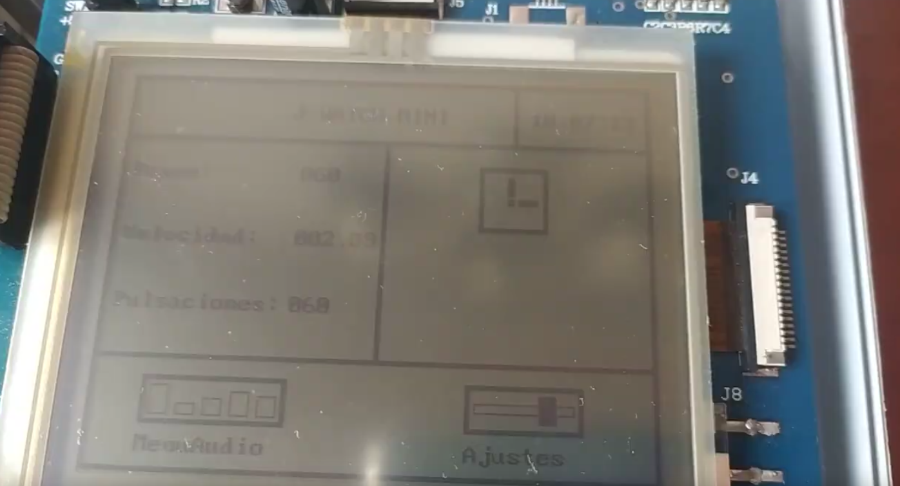
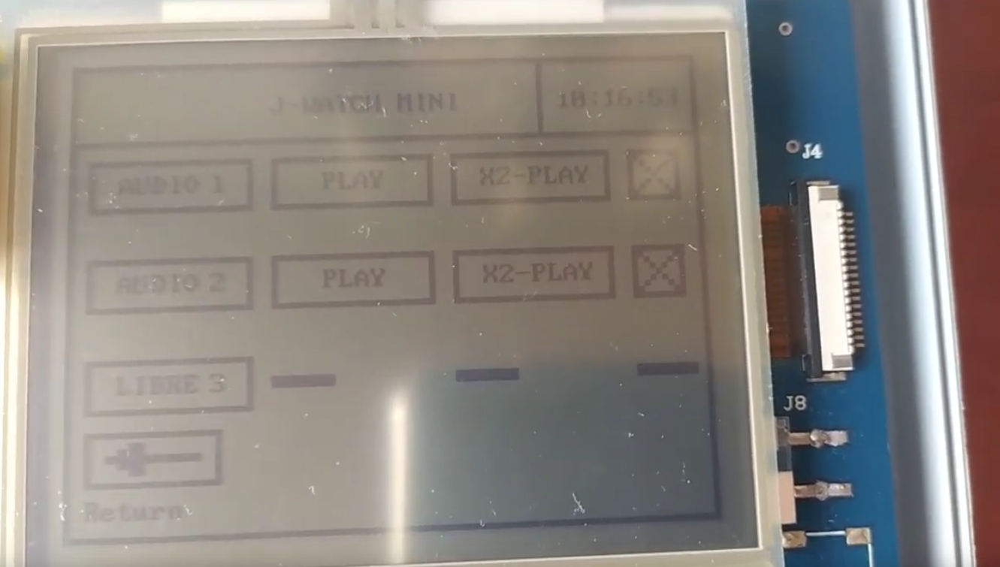
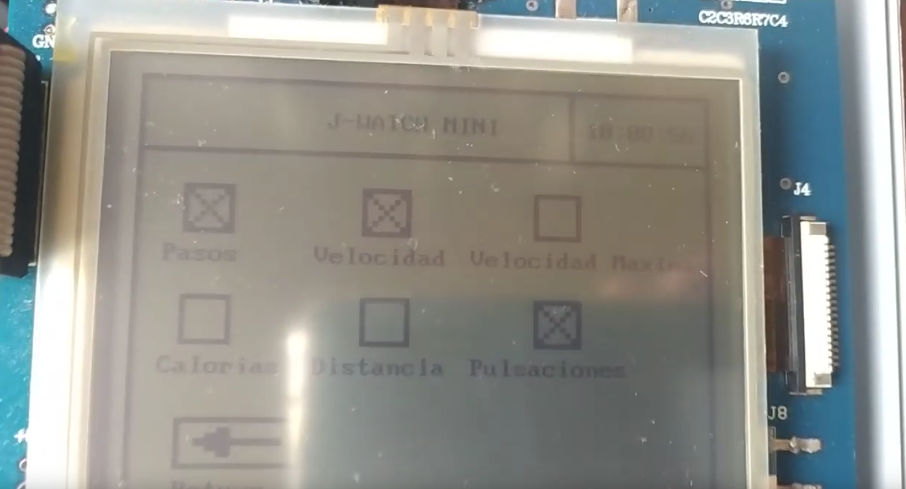

Algorithm Visualizer
Spring 2023 | C++ | Github repository
Application for simulating pathfinding and sorting algorithms.
* Graphics engine used : SFML.
PathFinding
You can place walls and obstacles. Then you can find the shortest path between the start and end
node with different algorithms. You can generate a random maze using the recursive division
algorithm.
Algorithms implemented:
- Dijkstra
- A*
- BreadthFirst
- DepthFirst
- Bidirectional
Sorting
A sequence of numbers are generated randomly. Then you can sort it with different algorithms and
visualize it, going forward and backward on the simulation.
Algorithms implemented:
- BubbleSort
- MergeSort
- QuickSort
- InsertionSort
- SelectionSort
- CocktailSort
Chess Engine based on Alpha-Beta pruning
Winter 2024 | C++11 OpenGL | Github repository
Chess Engine with search function based on Negamax algorithm (similar to minimax).
Tentative game strength level : 1800 ELO (Amateur player).
* Custom graphics Engine developed with OpenGL.
Implementation details :
- Search enhanced with alpha-beta pruning.
- Transposition table using zobrist hashing.
- Quiescence search extension on captures.
- Iterative Deepening
- SelectionSort
- Materialistic evaluation.
Conway’s Game Of Life
Summer 2023 | Java | Github repository
Implementation of cellular automata with statistics and different game
variants.
Utilized MVC, observer, and factory patterns.
* User interface created with Swing.
Implementation details :
- Finite sized map with toroidal toroidal shape.
- Model-View-Controler.
- Observer design pattern.
- Factory design pattern
Smartwatch on Samsung S3C44BOX
Winter 2024 | C EclipseARM | Github repository
Embedded software university project, Smartwatch developed in Samsung
S3C44BOX microcontroller.
Features :
- Fixed-point arithmetic for statistical calculations.
- Multi-threading (cooperative scheduling).
- Audio recording and playback.
- LCD screen and Keypad for user input.
- Track for 7 statistics like velocity, calories and steps.
Main menu :

Audio menu :

Statistics menu :
